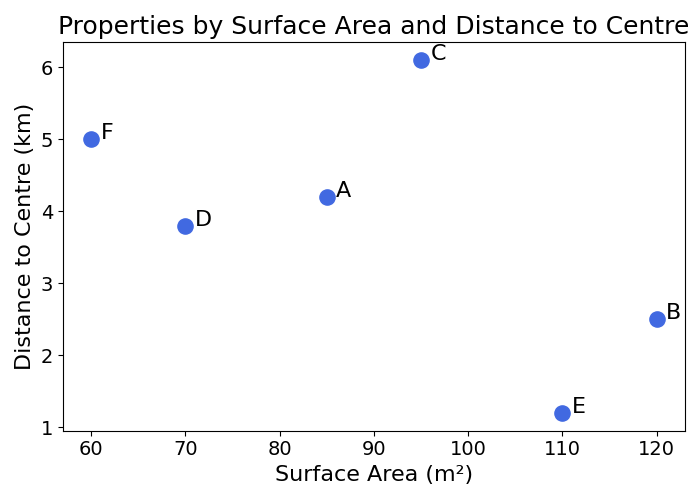
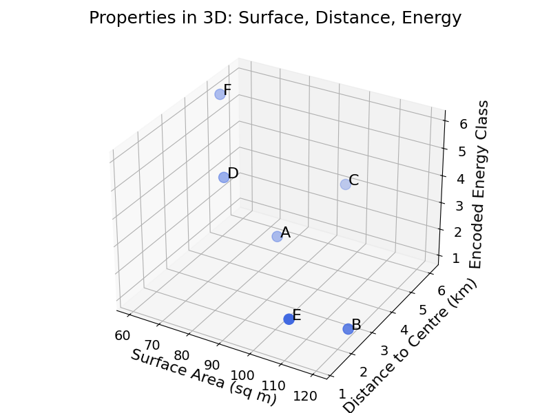

16 Encoding Categorical Features
Not all data is numerical. Categorical features represent data groupings. As an example, a property in Berlin can have a given neighbourhood, e.g., “Neukölln”, “Kreuzberg” or “Charlottenburg”.
| Property | Surface Area (sq m) | Distance to Centre (km) | Neighbourhood | Street Name | Energy Rating | Sell Price (K€) |
|---|---|---|---|---|---|---|
| A | 85 | 4.2 | Neukölln | Sonnenallee | B | 420 |
| B | 120 | 2.5 | Kreuzberg | Bergmannstr. | A | 610 |
| C | 95 | 6.1 | Charlottenburg | Kantstr. | C | 390 |
| D | 70 | 3.8 | Kreuzberg | Bergmannstr. | D | 370 |
| E | 110 | 1.2 | Charlottenburg | Unter Den Linden | B | 700 |
| F | 60 | 5.0 | Neukölln | Sonnenallee | F | 310 |
Exercise 16.1 Can you spot the other categorical variables in the above table?
All of the Machine Learning models studied so far deal with observations as points in space. Numerical features naturally determine coordinates of points in space. Properties can be plotted by their surface area and distance to the centre of town without problems:

Figure code
import matplotlib.pyplot as plt
surface_area = [85, 120, 95, 70, 110, 60]
distance_centre = [4.2, 2.5, 6.1, 3.8, 1.2, 5.0]
labels = ['A', 'B', 'C', 'D', 'E', 'F']
plt.figure(figsize=(7,5))
plt.scatter(surface_area, distance_centre, s=120, c='royalblue')
for i, label in enumerate(labels):
plt.text(surface_area[i]+1, distance_centre[i], label, fontsize=16)
plt.xlabel('Surface Area (sq m)', fontsize=16)
plt.ylabel('Distance to Centre (km)', fontsize=16)
plt.title('Properties by Surface Area and Distance to Centre', fontsize=18)
plt.xticks(fontsize=14)
plt.yticks(fontsize=14)
plt.tight_layout()
plt.show()We could try building a model that ignores neighbourhood, and uses “Distance to the Centre” as a proxy. This is not a bad idea, but a lot of information is lost in the process. And what is the centre of Berlin anyway?
How would models handle these categorical variables like neighbourhoods? This is what this chapter is about.
16.1 Types of Categorical
There are two main types of categorical features:
- Ordinal variables: these variables have an order. The energy efficiency rating of a property ranges from A (most efficient) to G (least efficient)
- Nominal variables: these variables have no intrinsic order. No possible ranking can be made of the neighbourhoods (e.g., “Neukölln” or “Kreuzberg”) mentioned in the previous example
16.2 Ordinal Variables
Ordinal variables can be converted to numbers relatively easily. As an example, you could map the energy rating from A to G to the numbers 1 to 7. This would create another dimension in the feature space of properties:
| Property | Surface Area (sq m) | Distance to Centre (km) | Energy Rating | Encoded Energy Rating |
|---|---|---|---|---|
| A | 85 | 4.2 | B | 2 |
| B | 120 | 2.5 | A | 1 |
| C | 95 | 6.1 | C | 3 |
| D | 70 | 3.8 | D | 4 |
| E | 110 | 1.2 | B | 2 |
| F | 60 | 5.0 | F | 6 |
Below is a plot of the properties in three dimensions: surface area, distance to centre, and encoded energy class.

Figure code
from mpl_toolkits.mplot3d import Axes3D
import matplotlib.pyplot as plt
surface_area = [85, 120, 95, 70, 110, 60]
distance_centre = [4.2, 2.5, 6.1, 3.8, 1.2, 5.0]
energy_rating = ['B', 'A', 'C', 'D', 'B', 'F']
encoded_energy = [2, 1, 3, 4, 2, 6]
labels = ['A', 'B', 'C', 'D', 'E', 'F']
fig = plt.figure(figsize=(8,6))
ax = fig.add_subplot(111, projection='3d')
ax.scatter(surface_area, distance_centre, encoded_energy, s=120, c='royalblue')
for i, label in enumerate(labels):
ax.text(surface_area[i]+1, distance_centre[i], encoded_energy[i], label, fontsize=16)
ax.set_xlabel('Surface Area (sq m)', fontsize=16)
ax.set_ylabel('Distance to Centre (km)', fontsize=16)
ax.set_zlabel('Encoded Energy Class', fontsize=16)
ax.set_title('Properties in 3D: Surface, Distance, Energy', fontsize=18)
ax.tick_params(axis='both', labelsize=14)
plt.tight_layout()
plt.savefig('figures/3d_surface_distance_energy.png')
plt.show()If the notion of space is not fully clear, refer to the chapter on data space.
16.3 Nominal Variables
Handling nominal variables is trickier, as a direct conversion to numbers would not make sense. Why would “Neukölln” be 1 and “Kreuzberg” be 2? Or the other way around? We need a smarter solution. The following sections will describe two of them.
16.3.1 One-Hot Encoding
The best way to understand One-Hot Encoding is to visualise it before explaining it. Imagine the following dataset:
| Property | Neighbourhood | Surface Area (sq m) | Sell Price (K€) |
|---|---|---|---|
| A | Neukölln | 85 | 420 |
| B | Kreuzberg | 120 | 610 |
| C | Charlottenburg | 95 | 390 |
| D | Kreuzberg | 70 | 370 |
| E | Charlottenburg | 110 | 700 |
| F | Neukölln | 60 | 310 |
The One-Hot Encoded dataset would look like this:
| Property | Surface Area (sq m) | Sell Price (K€) | Kreuzberg | Charlottenburg | Neukölln |
|---|---|---|---|---|---|
| A | 85 | 420 | 0 | 0 | 1 |
| B | 120 | 610 | 1 | 0 | 0 |
| C | 95 | 390 | 0 | 1 | 0 |
| D | 70 | 370 | 1 | 0 | 0 |
| E | 110 | 700 | 0 | 1 | 0 |
| F | 60 | 310 | 0 | 0 | 1 |
What happened there? The original neighbourhood column disappeared, and was replaced by three columns containing either 1 or 0.
One-Hot Encoding converts a categorical variable into a list of binary columns, indicating whether or not the property belongs to a category. The advantage of this method is that it assumes no order.
A drawback of this approach is that it can create many columns. Imagine that you want to apply the same method to the street name. You may end up with thousands of columns. For mathematical reasons we will not go into, this can be an issue for Machine Learning algorithms. This is sometimes referred to as the curse of dimensionality. If you want to develop a quick intuition of why, just remember that a lot of strange things happen in a space with many dimensions.
One-Hot Encoding in practice
In practice, One-Hot Encoding converts a categorical variable with \(N\) distinct values into \(N-1\) binary columns. Why do we remove one?
In statistics and Machine Learning, many issues arise when the features of a dataset are perfectly correlated. To avoid this, One-Hot Encoding drops one of the binary columns.
Going back to the example with three neighbourhood values (Kreuzberg, Charlottenburg and Neukölln), the processed dataset would look like this:
| Property | Surface Area (sq m) | Sell Price (K€) | Kreuzberg | Charlottenburg |
|---|---|---|---|---|
| A | 85 | 420 | 0 | 0 |
| B | 120 | 610 | 1 | 0 |
| C | 95 | 390 | 0 | 1 |
| D | 70 | 370 | 1 | 0 |
| E | 110 | 700 | 0 | 1 |
| F | 60 | 310 | 0 | 0 |
Having both Kreuzberg and Charlottenburg as 0 would mean that the property is in Neukölln.
One-Hot Encoding solves the categorical variable problem for variables with few categories. How could we encode categorical variables like street name? Ignoring these variables with many distinct values is one possibility. However, in the example of property pricing, the street name could carry some relevant information. The next section will explore one idea.
16.4 Target Encoding
Thinking about a property pricing model, how could we represent the street name of a property as a number?
We want to be able to capture the impact of the street name on the price. To do so, we could encode each value of the categorical variable (e.g., “Sonnenallee” or “Bergmannstr.”) as the average of the target variable for the observations in this category. In this case, each street name would be replaced by the average price on that street.
This is an abstract definition, let’s make it more concrete with an example:
| Property | Surface Area (sq m) | Street Name | Sell Price (K€) |
|---|---|---|---|
| A | 85 | Sonnenallee | 420 |
| B | 120 | Bergmannstr. | 610 |
| C | 95 | Kantstr. | 390 |
| D | 70 | Bergmannstr. | 370 |
| E | 110 | Unter Den Linden | 700 |
| F | 60 | Sonnenallee | 310 |
To encode the street name with Target Encoding, compute the average value of the target for each street name:
- Bergmannstr.: \(\frac{610 + 370}{2} = 490\)
- Unter Den Linden: \(700\) (only one property)
Exercise 16.2 Show that the average target value for Sonnenallee is 365.
The dataset with a target encoded street name feature now looks like this:
| Property | Surface Area (sq m) | Street Name | Sell Price (K€) | Encoded Street Name |
|---|---|---|---|---|
| A | 85 | Sonnenallee | 420 | 365 |
| B | 120 | Bergmannstr. | 610 | 490 |
| C | 95 | Kantstr. | 390 | 390 |
| D | 70 | Bergmannstr. | 370 | 490 |
| E | 110 | Unter Den Linden | 700 | 700 |
| F | 60 | Sonnenallee | 310 | 365 |
This way, a lot of the price relevant information of the street name is preserved. The main advantage of this method is that it can deal with categorical variables with many values without creating too many dimensions.
A possible drawback of this method is that if there are street names for which there is only one or a few properties, the average would only be the price of the single property on this street. There are smart ways to deal with these cases, though they are beyond the scope of this book.
If you are curious
One way to avoid the problem described above, you can decide on a threshold (e.g., 10), and encode any street name with fewer observations than 10 with the global average instead of the average for this street name.
This averaging process can also be used in the binary classification context. The average of the target variable for a given categorical value could be the average of 0’s and 1’s of the target label (i.e., negatives and positives).
16.5 Information Leakage
As mentioned in the introductory section, categorical encoding can be a source of information leakage between the training and test set. To avoid this leakage, it is critical to compute all these transformations on the training set only.
In One-Hot Encoding, only create columns for the categorical values seen in the training set. If a new value is found in the test set, it could be either excluded or flagged as missing (with another binary column). Using the entire dataset to encode categorical features would not simulate real prediction conditions.
For Target Encoding, the average target value for each category should only be computed on the training data. These averages can then be applied to the test set. If a new categorical value is found in the test set, it can be excluded or encoded with the global average of the target variable (over the entire dataset).
Why worry about this? When the model is used for prediction, the goal of splitting the data between train and test set is to estimate the performance of the model on unseen data. To do so, it is critical to compute preprocessing transformations on the training data. In the future, data will come one or more row at a time. The only averages available will be from the training data.
16.6 Final Thoughts
Without the appropriate encoding, categorical variables cannot be handled by Machine Learning models. ML models learn the relationships between inputs and a target variable using mathematical tricks applicable to lists of numbers (distance or splitting of space).
Encoding categorical variables converts them to numbers that can then be used in the training and prediction process. The encoding methods in this chapter include:
- Ordinal Encoding: mapping categorical values with an intrinsic order to a number
- One-Hot Encoding: representing categorical variables to a list of binary columns
- Target Encoding: mapping categorical values to the average target value for this group
The next chapter will explore another data type: dates and times.
16.7 Solutions
Solution 16.1. Exercise 16.1 The other two categorical variables are:
- Street Name
- Energy Rating
Solution 16.2. Exercise 16.2
\(\frac{420 + 310}{2} = 365\)